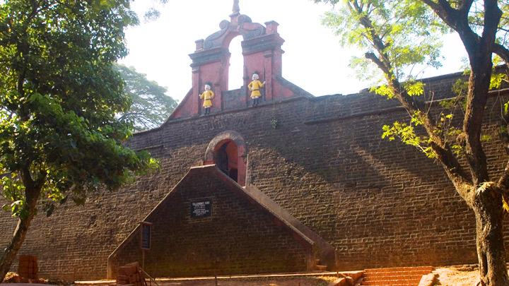
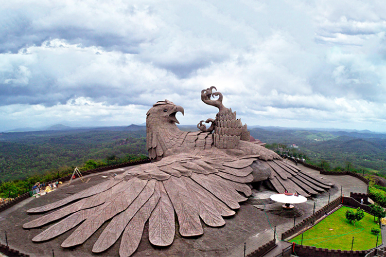
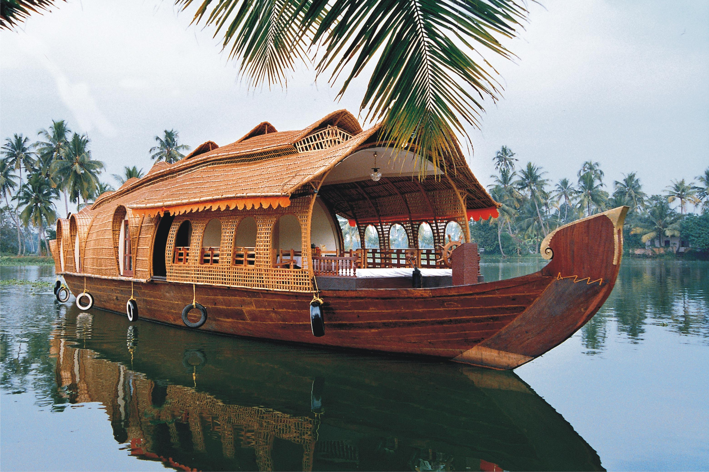

Top Destinations

Thalassery Fort
Thalassery Fort, located in Thalassery (Tellicherry) in the Kannur district of Kerala, India, is a historical monument built by the British East India Company in 1708. Positioned strategically along the Malabar Coast, the fort played a significant role in the spice trade and served as a military stronghold. Constructed with massive laterite blocks, the fort features high walls, secret tunnels, and intricately designed bastions. It stands as a testament to the colonial architecture and the historical conflicts between the British and local rulers. Today, Thalassery Fort is a popular tourist attraction, offering panoramic views of the Arabian Sea and glimpses into the region's colonial past.

Jatayu Nature Park
Jatayu Nature Park, also known as Jatayu Earth’s Center, is a unique and sprawling tourism destination in Chadayamangalam, Kerala, India. The park is named after the mythical bird Jatayu from the Indian epic Ramayana, who is believed to have fallen at this site while trying to rescue Sita from Ravana. The park features the world's largest bird sculpture, a magnificent representation of Jatayu with a wingspan of 150 feet and a height of 70 feet. Beyond its mythological significance, the park offers a blend of adventure, culture, and wellness with its rock climbing, rappelling, and paintball facilities, along with a digital museum and a multi-dimensional theatre. Jatayu Nature Park embodies the harmony between nature and mythology, providing visitors with an immersive and enriching experience.

Muzhapilangad Beach
Muzhappilangad Beach, located in the Kannur district of Kerala, India, is renowned for being one of the longest drive-in beaches in Asia. Stretching over four kilometers along the Malabar Coast, this pristine beach allows visitors to drive right along the shoreline, offering a unique and exhilarating experience. The beach is flanked by black rocks, which protect it from strong currents, making it a safe spot for swimming and water sports. With its picturesque sunsets, serene ambiance, and opportunities for adventure, Muzhappilangad Beach is a popular destination for both locals and tourists seeking natural beauty and excitement.

Kochi Backwaters
The Kochi Backwaters, part of the extensive network of Kerala's backwaters, offer a tranquil and scenic escape in the vibrant city of Kochi. These serene waterways, interconnected with lakes, canals, and rivers, provide a unique perspective of Kerala's lush landscapes and rich biodiversity. Traditional houseboats, known as kettuvallams, glide along the backwaters, offering tourists a peaceful and immersive experience amidst coconut groves, paddy fields, and quaint villages. The Kochi Backwaters are a testament to the region's harmonious blend of natural beauty and cultural heritage, making them a must-visit for anyone exploring Kerala.
About Kerala

Kerala Map
Kerala, located on the southwestern coast of India, is renowned for its lush landscapes, serene backwaters, and rich cultural heritage. Known as "God's Own Country," it boasts a diverse ecosystem, including verdant hills, pristine beaches, and extensive waterways. Kerala's cultural tapestry is woven with traditional dance forms like Kathakali and Mohiniyattam, along with vibrant festivals such as Onam. The state is also recognized for its high literacy rate, advanced healthcare system, and progressive social indicators. Kerala's unique cuisine, featuring coconut and spices, reflects its historical trade links with various global cultures.